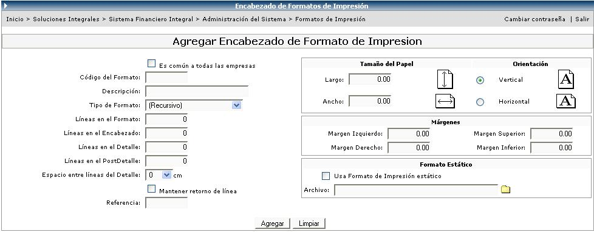

Básicamente lo que se pretende en esta opción es, asociarle un formato de impresión a las diferentes órdenes de compra que tiene la empresa y especificarle si ese tipo de orden de compra genera o no genera Tracking automáticamente. Esto para aquellas órdenes que son compradas en el exterior.
Este mantenimiento requiere crear un código y una descripción y se le asigna el formato de impresión deseado, de esta forma es posible tener tantos formatos de impresión como tipos de órdenes de compra existen.
Las opciones de formatos que aparecen
en la lista del combo: Formato de Impresión,
se crean en el módulo Administración del Sistema,
en la opción Formatos de Impresión, donde se tiene
que especificar una serie de características para poder
crear el formato.

En la siguiente pantalla si el check genera Tracking de Embarque se activa, el usuario puede administrar y darle seguimiento a la ruta que tiene el pedido de la orden de compra.